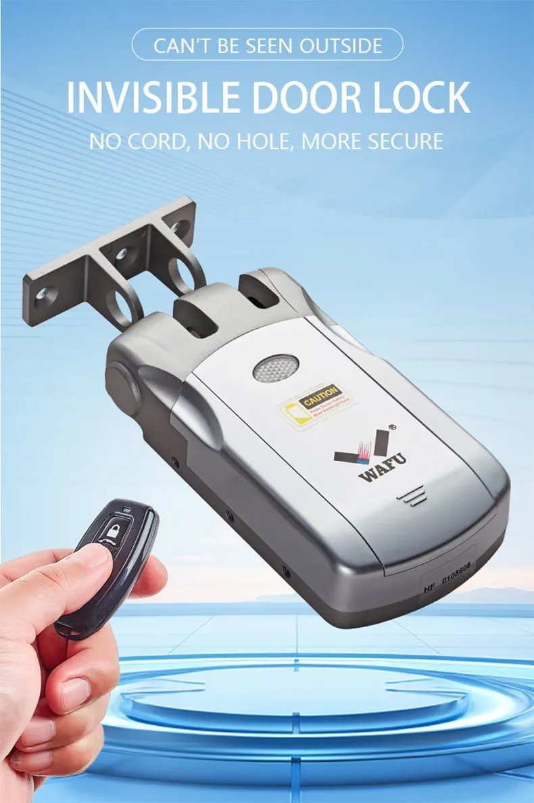
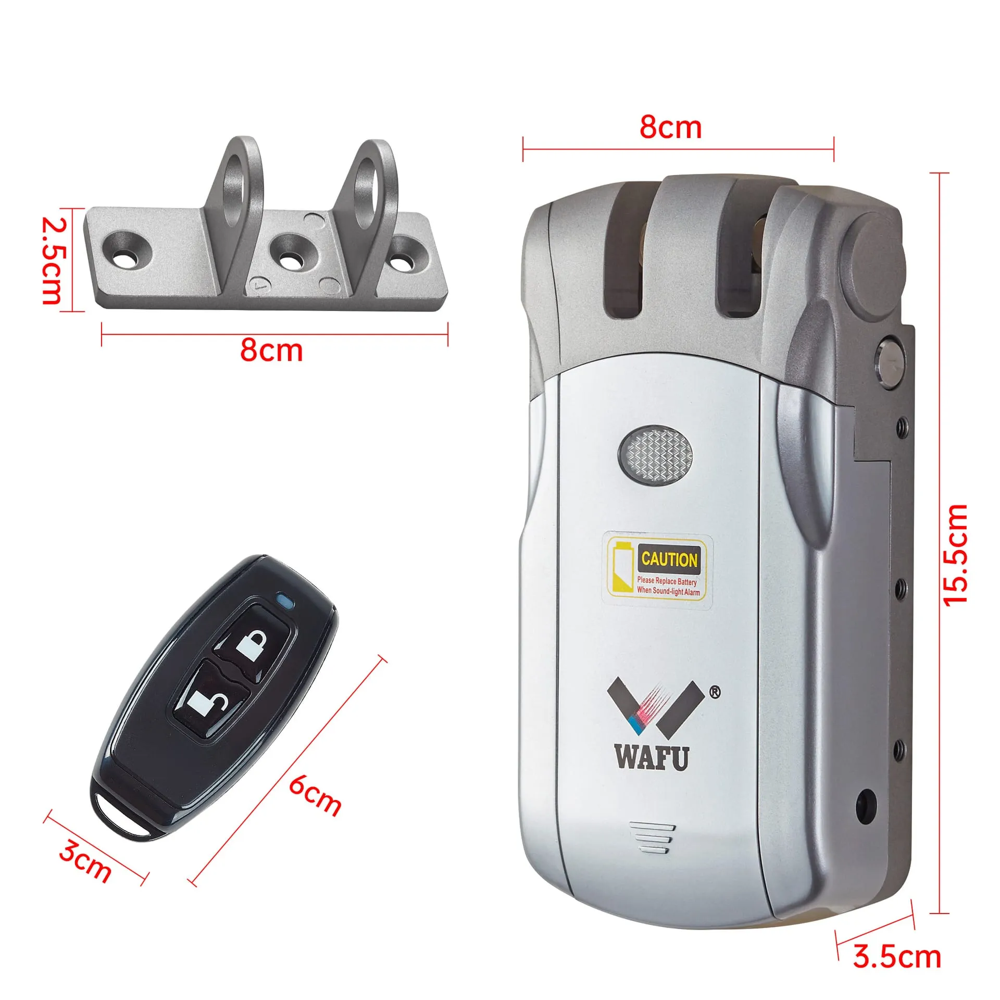
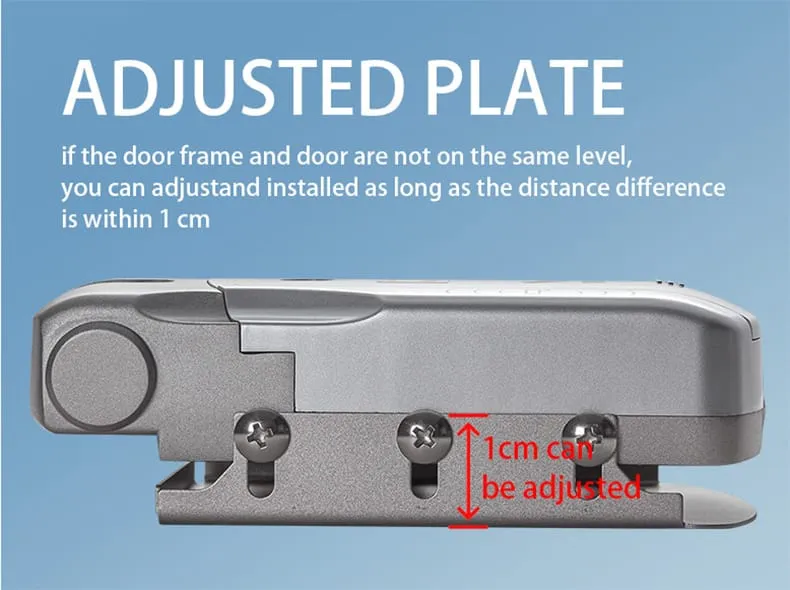
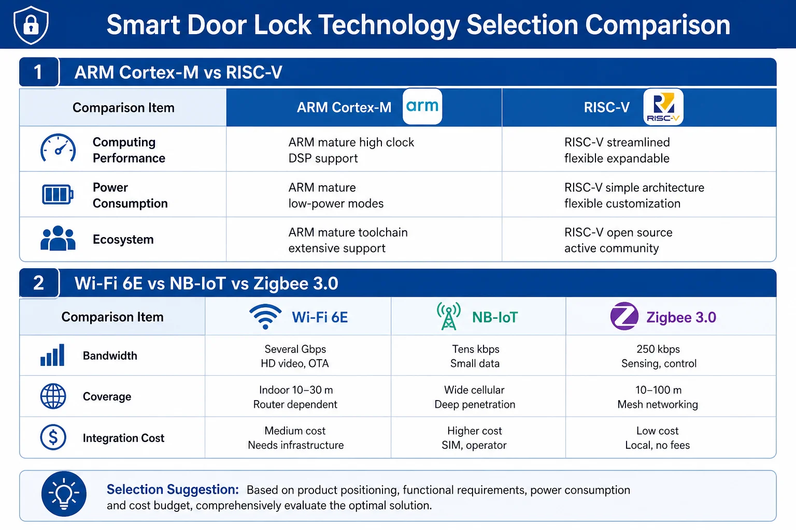
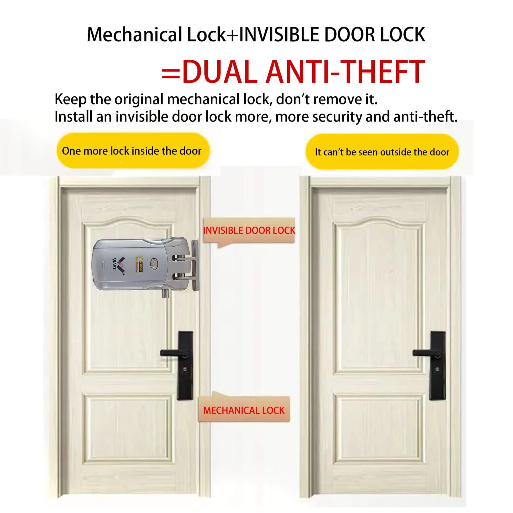
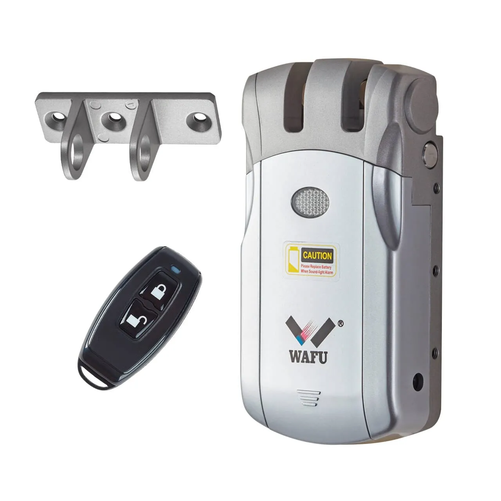
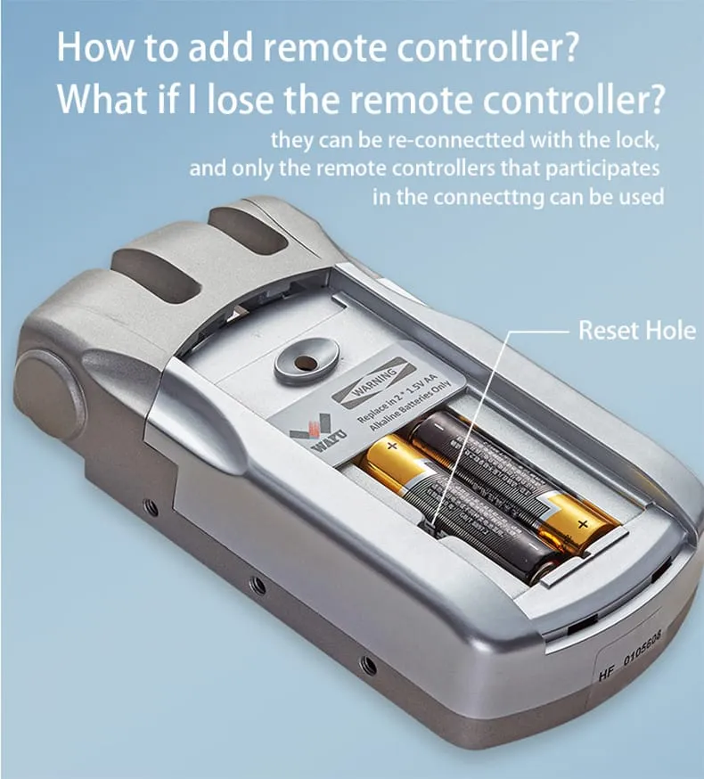
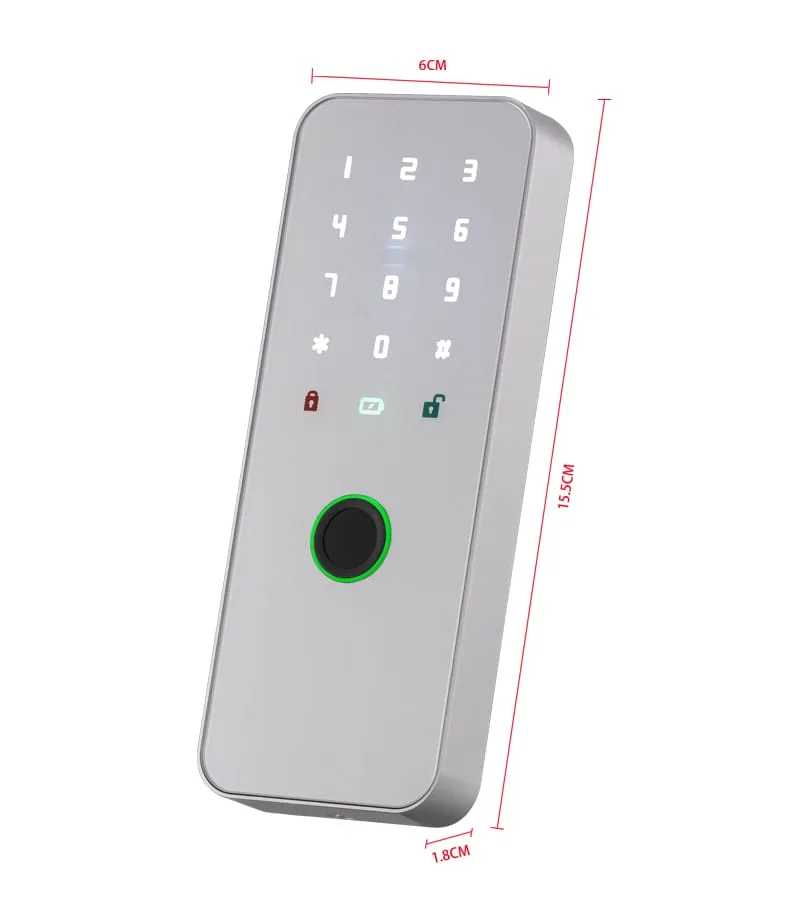
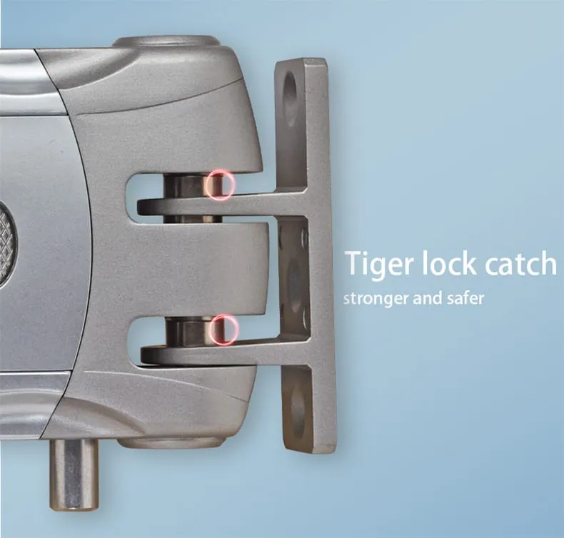

Este artigo foi redigido pela equipa técnica da WAFU (Shenzhen) e destina-se a equipas de projecto, fabricantes de portas e distribuidores B2B nos sectores de hotel e empreendimentos multifamiliares. Baseia-se em dados medidos do modelo WF-019. Cite a fonte ao reutilizar.
Por estarem totalmente ocultas na porta, as fechaduras invisíveis oferecem um duplo valor para projectos de hotéis e apartamentos: estética integrada e segurança melhorada. No entanto, durante a implementação do projecto, os desafios de compatibilidade relacionados com a estrutura da porta, os sistemas de alimentação eléctrica, a adaptabilidade ambiental e a integração de sistemas tornam-se frequentemente grandes estrangulamentos para a instalação técnica. Este artigo visa fornecer às equipas de projecto, fabricantes de portas e distribuidores B2B uma estrutura de solução abrangente que cobre a estrutura, os sistemas eléctricos, a integração e o ambiente. Com base em dados empíricos e em estudos de caso reais — como o modelo WAFU WF-019 —, o texto detalha sistematicamente as principais dimensões das questões de compatibilidade e descreve as estratégias correspondentes.

Compatibilidade com a Estrutura da Porta
A instalação física das fechaduras invisíveis é o primeiro desafio na implementação do projecto. A compatibilidade em relação à espessura da porta, à profundidade do batente e ao material da porta determina directamente a viabilidade e a estabilidade a longo prazo da instalação.
Padrões de Espessura da Porta vs. Variações Reais
Embora a espessura padrão da indústria para portas varie de 40 mm a 55 mm, os projectos reais envolvem frequentemente portas finas (30 mm) ou portas fora do padrão, com uma espessura superior a 60 mm. As fechaduras invisíveis WAFU utilizam um design modular do corpo da fechadura para acomodar uma gama de espessuras de 30 mm a 70 mm. Para portas finas de 30 mm, é empregue um motor ultrafino e um mecanismo de transmissão compacto para garantir que a vida útil mecânica de 200.000 ciclos (dados medidos, testes de laboratório) não é afectada. Para espessuras fora do padrão, são fornecidos componentes de extensão do fecho personalizados, permitindo um ajuste com precisão milimétrica.
Profundidade do Batente e Espaço de Instalação
A profundidade insuficiente da cavidade de instalação é um obstáculo técnico comum. O modelo WAFU WF-019 apresenta uma profundidade de corpo de fechadura de apenas 22 mm, sendo compatível com a grande maioria dos batentes standard. Os dados empíricos (dados medidos) mostram que, em cavidades com uma profundidade ≥25 mm, é mantida uma folga de ≥3 mm entre o corpo da fechadura e o batente, garantindo um espaço de compensação adequado para a expansão e contraacção térmica. Para tipos de porta com batentes excepcionalmente rasos, está disponível uma solução de placa de montagem frontal, utilizando uma estrutura de reforço exterior para compensar as limitações de profundidade.


Compatibilidade com os Diferentes Materiais da Porta
Os diferentes materiais das portas impõem requisitos variados quanto à integridade estrutural da fixação do corpo da fechadura e à condutividade térmica. Para portas de madeira maciça, é necessário lidar com o risco de afrouxamento dos parafusos causado pela retração da madeira; a WAFU utiliza um método de fixação dupla que combina parafusos auto-atarraxantes com buchas de expansão. No caso de portas mistas de aço e madeira, deve ser mitigado o potencial da camada metálica para bloquear os sinais sem fios; isto é conseguido optimizando o posicionamento da antena para garantir uma comunicação estável. As instalações em portas de vidro requerem grampos especializados e juntas de amortecimento para evitar a concentração de tensão que poderia levar à quebra do vidro.
Identificação de Definições de Abertura à Esquerda ou à Direita
Identificar com precisão o sentido de abertura da porta é crucial para aumentar a eficiência durante as implementações em grande escala. Um processo de avaliação normalizado exige que os instaladores observem a posição das dobradiças a partir do exterior da porta: as dobradiças à esquerda indicam uma porta com abertura à esquerda, enquanto as dobradiças à direita indicam uma porta com abertura à direita. O modelo WAFU WF-019 apresenta um design bidireccional; o corpo da fechadura inclui um sensor de orientação integrado que detecta automaticamente o sentido de abertura, e o mecanismo de accionamento do motor suporta uma rotação de 180 graus sem necessitar de alterações nos componentes de hardware. As alterações de configuração no local podem ser feitas através da aplicação de gestão com um único clique — eliminando a necessidade de desmontagem ou de ferramentas —, reduzindo assim significativamente a complexidade da instalação e os custos de mão-de-obra.
Projecto do Sistema de Alimentação e Optimização Operacional
A fiabilidade e o custo-benefício da solução de alimentação impactam directamente o Custo Total de Propriedade (TCO) do projecto. A compatibilidade da fechadura inteligente deve abranger diversos modos de alimentação, tecnologias de baixo consumo energético e mecanismos de reserva de emergência. Para mais informações sobre autonomia da bateria, consulte o guia de autonomia de fechaduras invisíveis.
Comparação de Modos de Alimentação
A alimentação por bateria oferece a máxima flexibilidade de implantação, a alimentação com fios garante uma fonte de energia permanente e os modos híbridos combinam as vantagens de ambos. O valor da fechadura invisível da WAFU é evidente no seu design de sistema duplo: o sistema principal funciona com quatro pilhas AA, enquanto o sistema de reserva suporta uma ligação cablada de 12 V CC. Quando as pilhas se esgotam, o sistema muda automaticamente para a alimentação com fios, garantindo um funcionamento ininterrupto. Esta redundância de energia é particularmente adequada para ambientes de alta disponibilidade, como hotéis.
Tecnologia de Baixo Consumo e Custos Operacionais
Uma corrente em modo de repouso (sleep current) inferior a 15 μA serve de base técnica para uma longa vida útil das pilhas (dados medidos, testes de laboratório). A WAFU utiliza algoritmos de gestão dinâmica de energia para desactivar os circuitos não essenciais durante os períodos de inactividade, mantendo apenas a monitorização básica da comunicação. Os dados dos testes de campo (com base em 200 amostras, frequência de utilização standard) indicam que a duração da bateria ultrapassa os 12 meses. Para um projecto hoteleiro com 1.000 quartos, esta abordagem reduz a frequência anual de operações de manutenção em mais de 50% em comparação com as soluções tradicionais que dependem exclusivamente de baterias (com base nas médias do sector), reduzindo directamente os custos tanto de mão-de-obra como de materiais.
Mecanismo de Backup de Energia de Emergência
Os supercondensadores fornecem energia de emergência em caso de falha total da rede eléctrica principal. As fechaduras invisíveis da WAFU possuem supercondensadores com uma capacidade de 5 F/5,4 V, suportando três ciclos completos de abertura — superando largamente o padrão da indústria de um ou dois ciclos (dados medidos). Este mecanismo foi validado através de 2.000 ciclos de carga e descarga (com uma degradação de capacidade inferior a 20%), garantindo que as rotas de evacuação dos quartos se mantêm acessíveis em situações extremas, como falhas de energia accionadas por alarmes de incêndio.
Integração de Sistemas e Segurança de Dados
A integração perfeita com os sistemas de gestão existentes é um pré-requisito para garantir que uma actualização tecnológica acrescenta valor em vez de criar um encargo. Os desafios de integração centram-se principalmente em três áreas: normalização de interfaces, selecção de protocolos de comunicação e conformidade de dados.
Interfaces de Sistemas PMS: Experiência Real na Transição de Falhas de Integração para uma Implementação Fluida
As APIs padronizadas enfrentam frequentemente obstáculos durante a implementação real. Os problemas mais comuns incluem incompatibilidades de versão da API e atrasos na sincronização de dados durante a fase inicial de lançamento. Recomendamos uma abordagem de validação por etapas:
- Testes de Interface em Sandbox: Simule chamadas ao PMS dentro do ambiente de middleware normalizado fornecido pela WAFU para verificar comandos essenciais, como a leitura do estado do quarto e a emissão de códigos de acesso temporários. Este middleware oferece interfaces universais compatíveis com os padrões de API aberta; foi integrado com sucesso com sistemas PMS líderes de mercado, como o Opera e o Fidelio, suportando a formatação flexível de dados e o mapeamento da lógica de negócio.
- Estratégia de Sincronização por Passos: Para evitar sobrecargas de dados durante o lançamento inicial, utilize uma estratégia de sincronização incremental baseada em intervalos de tempo e pisos. Por exemplo, realize uma reconciliação completa de dados diariamente entre as 02:00 e as 04:00 da manhã, enquanto utiliza a sincronização incremental para operações de rotina.
- Plano de Contingência de Emergência: Caso as anomalias de interface resultem em discrepâncias no estado dos quartos, o sistema muda automaticamente para o modo de cache local e envia alertas para o departamento de engenharia, garantindo que os check-ins dos hóspedes não são interrompidos.
Comunicação Multiprotocolo: Matriz de Selecção de Protocolos com Base no Tipo de Projecto
Um maior número de protocolos não significa necessariamente um melhor desempenho; a escolha do protocolo adequado é fundamental. As recomendações que se seguem baseiam-se em insights obtidos a partir de mais de mil projectos da WAFU (comparação de hardware: selecção tecnológica de fechaduras inteligentes):
- Wi-Fi 6E: Ideal para hotéis de gama alta recém-construídos ou projectos de domótica completa que exijam elevada largura de banda e desempenho em tempo real; suporta aplicações intensivas em dados, como o streaming de vídeo. Esta opção pressupõe a implementação — ou o planeamento da implementação — de uma rede sem fios de alto desempenho.
- Zigbee 3.0: A escolha preferencial para projectos de renovação em hotéis já existentes. A sua rede auto-organizável e capacidade de baixo consumo energético tornam-no ideal para ambientes com elevada densidade de quartos e obstruções significativas por paredes; opera independentemente da rede backbone do hotel, permitindo uma implementação mais flexível.
- BLE 5.2: Concebido para desbloqueio directo via smartphone e implementação de baixo custo; adequado para arrendamentos de curta duração e espaços de escritório onde se prioriza uma experiência móvel fluida e não é necessária uma integração complexa de backend.
- NB-IoT: Orientado para projectos com infraestruturas de rede limitadas, como resorts remotos ou unidades habitacionais dispersas; utiliza redes de operadores para oferecer uma ampla cobertura e gestão remota com baixo consumo de energia.
A placa de comunicação modular permite a substituição no local, conforme necessário, garantindo a escalabilidade para futuras actualizações do sistema.

Implementação de Segurança e Conformidade: Um Processo de Ciclo Fechado, da Criptografia à Auditoria
A segurança é primordial e deve estar integrada em todas as etapas do processo de implementação. Adoptamos uma abordagem de quatro fases: Projecto, Implementação, Verificação e Auditoria (detalhes de certificação: guia internacional de certificação):
- Privacidade desde a Concepção (Privacy by Design): Segue os princípios de «Privacidade por Padrão» (ex.: RGPD). Os modelos biométricos (impressões digitais, dados faciais) são encriptados usando o AES-256 e armazenados localmente no chip da fechadura; as imagens biométricas em bruto nunca são enviadas para os servidores.
- Criptografia de Transmissão e Armazenamento: O protocolo TLS 1.3 é obrigatório para toda a transmissão de dados. As informações sensíveis (como os números de telefone dos utilizadores) são armazenadas em formato desidentificado em bases de dados na nuvem, e os registos de acesso detalhados são encriptados e retidos durante pelo menos seis meses.
- Verificação de conformidade por terceiros: Obter certificações como CE e FCC é apenas o ponto de partida. Recomendamos que os responsáveis pelo projecto exijam aos fornecedores relatórios de testes de intrusão (pentests) de segurança emitidos por agências externas independentes.
- Auditorias de Segurança Regulares: Os direitos de acesso são auditados trimestralmente para remover as contas dos ex-colaboradores; as simulações de ataques cibernéticos são realizadas semestralmente para testar a capacidade de resposta a emergências e de recuperação do sistema.
Certificações e Patentes
Certificação CE · Conformidade FCC (Part 15) · Conformidade RoHS · Protecção por patentes (DE/EP/CN …)


Adaptabilidade Ambiental e Classificações de Protecção
Ampla Gama de Temperatura de Funcionamento
A gama de temperaturas de funcionamento varia de -20 °C a 60 °C, tornando o dispositivo adequado para a grande maioria das zonas climáticas em todo o mundo. Mesmo sob temperaturas extremas, a Taxa de Falsa Rejeição (FRR) mantém-se consistentemente em 1% ou menos (dados medidos, testes de laboratório).
Compatibilidade de Materiais e Protecção contra a Corrosão
A caixa em liga de zinco fundido sob pressão (die-cast) possui um revestimento PVD e resiste a mais de 96 horas de testes de névoa salina (dados medidos). Os conectores em aço inoxidável garantem a compatibilidade a longo prazo com diversos tipos de batentes de porta.
Caso de Estudo Real: Aplicação com Classificação IP65 num Hotel Alemão
Uma cadeia de hotéis de gama alta na Alemanha enfrentava elevadas taxas de falhas no seu sistema de fechaduras legado devido ao ambiente húmido, registando uma média de mais de 50 falhas por mês durante as estações húmidas (fonte: registo interno de manutenção do operador hoteleiro). As fechaduras invisíveis da WAFU, com classificação IP65, foram instaladas em mais de 1.000 unidades no prazo de duas semanas; o sistema registou zero avarias nos seis meses seguintes à instalação (amostra n=1.027, período de monitorização 180 dias), enquanto o sistema anterior apresentava uma média superior a 50 avarias mensais no mesmo período. A estabilidade do sistema em condições de humidade foi comprovada com sucesso, e características como a sincronização do estado do quarto e a gestão de palavras-passe temporárias foram integradas de forma fluida.

Melhores Práticas para Avaliação Pré-Instalação
Uma implementação bem-sucedida começa com uma avaliação pré-instalação rigorosa. Com base nos 13 anos de experiência da WAFU como OEM, desenvolvemos uma lista de verificação de sete passos para inspecções no local (encomendas por grosso: guia de encomendas por grosso; white paper B2B OEM/ODM):
| Etapa | Artigo de Inspecção | Procedimento Específico | Critérios de Aceitação |
|---|---|---|---|
| 1. Medição da Porta | Espessura e largura da porta, profundidade do batente | Utilize um paquímetro digital para medir a parte superior, o meio e a parte inferior da porta; registe o valor mínimo. | Os valores medidos estão dentro do intervalo de compatibilidade especificado para o corpo da fechadura (ex.: WAFU WF-019: espessura da porta de 30 a 70 mm, profundidade do batente ≥ 22 mm). |
| 2. Material e Estrutura | Material da porta e estrutura interior | Consulte o fabricante ou bata à porta para identificar o som; se possível, faça um pequeno furo numa zona não crítica para verificar a existência de reforços metálicos internos. | Identifique o material (madeira maciça, composto de aço e madeira, vidro) e avalie se a resistência estrutural nos pontos de fixação da fechadura é suficiente. |
| 3. Avaliação da Fonte de Alimentação | Localização da fonte de energia e estabilidade da tensão | Meça a tensão da linha reservada para a fechadura (deve estar dentro de 12 V ± 10%); utilize um multímetro para verificar a queda de tensão no momento do arranque do motor. | A tensão é estável; a queda de tensão não ultrapassa 5% da tensão nominal. Se não existir nenhuma linha reservada, confirme se existe espaço adequado para o compartimento da bateria. |
| 4. Teste do Ambiente de Rede | Intensidade do sinal e isolamento da rede | Utilize uma aplicação móvel para testar a intensidade do sinal Wi-Fi/Bluetooth no local planeado para a instalação; confirme junto do departamento de TI se a rede dos quartos de hóspedes opera numa VLAN isolada e independente. | Intensidade do sinal ≥ -70 dBm; a política de rede permite a comunicação entre a fechadura e o sistema de gestão (backend) designado. |
| 5. Verificação do Sentido de Abertura e Puxador | Sentido de abertura da porta, tipo de puxador existente | Confirme a posição das dobradiças (esquerda/direita) a partir do lado exterior. Meça a distância do eixo central do puxador existente até à borda da porta. | Determine se a abertura é para a esquerda ou para a direita; verifique a compatibilidade entre o manípulo da nova fechadura e os orifícios de fixação existentes, ou determine se é necessária uma placa adaptadora. |
| 6. Pré-avaliação da Integração do Sistema | Documentação da interface PMS, ambiente de teste | Obtenha a documentação da interface do PMS (número da versão, método de autenticação) junto do departamento de TI do hotel; solicite uma conta de teste ou um ambiente de sandbox. | Confirme os protocolos de interface (ex.: RESTful/SOAP) e a disponibilidade, e avalie o esforço de desenvolvimento necessário. |
| 7. Projecto-piloto de pequena escala | Validação do processo end-to-end | Seleccione 3 a 5 quartos de diferentes tipos para a instalação; teste todo o fluxo de trabalho, desde a instalação, configuração e ligação de rede até aos testes de integração com o PMS. | Prossiga para a implementação em massa apenas após confirmar que todas as funções operam correctamente, que a equipa de instalação está familiarizada com o processo e que não restam quaisquer pendências. |
1.Medição da Porta
Medir superior, meio e inferior — registar valor mínimo

2.Material e Estrutura
Verificar material da porta e reforços internos

3.Avaliação da Fonte de Alimentação
Verificar queda de tensão ou compartimento de baterias

4.Teste do Ambiente de Rede
Testar Wi-Fi/Bluetooth no local de instalação

5.Sentido de Abertura e Puxador
Confirmar dobradiças esquerda/direita pelo exterior
6.Pré-avaliação da Integração
Documentação PMS e ambiente sandbox
7.Projecto-piloto
Testar 3–5 quartos end-to-end
Fig. 6: Lista de verificação de sete passos — utilizar em conjunto com a tabela acima para inspecções no local
Esta lista de verificação elimina sistematicamente 80% dos possíveis problemas de compatibilidade, minimizando os riscos da instalação no local.
Conclusão
A implementação bem-sucedida em larga escala de fechaduras invisíveis depende de uma compatibilidade sistemática em quatro dimensões principais: estrutura da porta, design de alimentação eléctrica, integração de sistemas e durabilidade ambiental. Através de um design modular, redundância de sistema duplo e interfaces padronizadas, a WAFU oferece uma solução comprovada e fiável.
Como responsável pela tomada de decisões do projecto, concentre-se nos três pontos seguintes antes da aquisição:
- Priorize a Validação Técnica em Detrimento do Preço: Exija que os fornecedores apresentem estudos de caso reais envolvendo tipos de portas e ambientes de rede semelhantes, e certifique-se de que a avaliação de pré-instalação de sete passos, mencionada anteriormente, é concluída.
- Critérios de Selecção de Fornecedores: Dê prioridade a fornecedores OEM/ODM com vasta experiência em OEM, capazes de oferecer suporte técnico completo (full-stack) — desde o hardware até à cloud. A sua experiência em projectos é fundamental para antecipar e resolver problemas complexos no local.
- Esclareça os Termos de Serviço a Longo Prazo: Defina claramente no contrato os períodos de suporte e as partes responsáveis pelas actualizações de software, patches de segurança e actualizações de interface, garantindo que o sistema permanece passível de manutenção durante todo o seu ciclo de vida.
A essência da mitigação de riscos de compatibilidade reside em transformar detalhes técnicos incertos em processos verificáveis, accionáveis e padronizados. Isto vai para além da simples aquisição de produtos; trata-se de uma iniciativa de engenharia de sistemas crucial para a estabilidade operacional a longo prazo. Para consultoria de projecto: contacte a equipa B2B da WAFU.